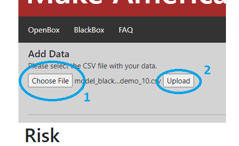
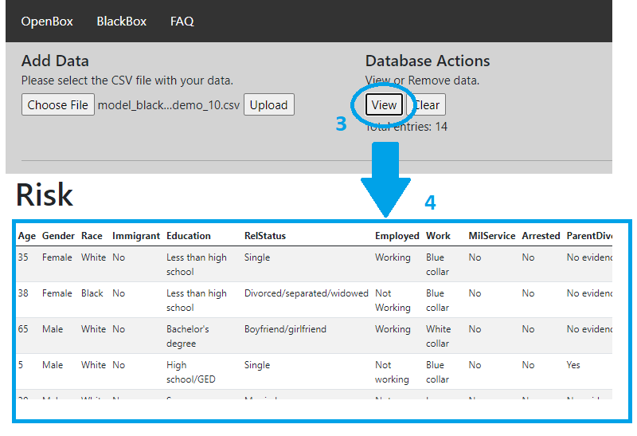
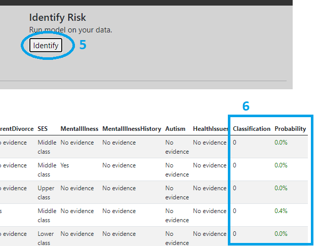
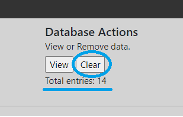

FAQ
Why use this tool?
- To better understand the factors affecting the risks of an individual committing a mass shooting
- To assess criteria to be used in firearms license background checks
Who is this tool for?
This tool can be used by individuals interested in firearms, gun shop owners or regulators, among others.
What is OpenBox?
OpenBox is our simplest model. It looks only at a small set of variables to determine the risk caused by a certain individual.
What is BlackBox?
BlackBox is a more complex model that uses Machine Learning (ML) to determine whether an individual poses a risk or not. It looks at a more extensive set of variables. Its name comes from the fact that it is less straightforward to understand the impact of one specifc variable on the overall risk.
Should I use OpenBox or BlackBox?
| OpenBox | BlackBox |
|---|---|
| Only a small amount of information is known | A lot of information is known |
| Process only one prospect at a time | Can process many prospects at once |
| Provide results as a risk factor (subjective) | Provide results as a probability (more objective) |
How to use OpenBox?
Simply enter the information you have about the prospect in the input fields on the left. The risk level is automatically updated as the inputs are changed.
How to use BlackBox?
BlackBox requires you to upload your data before they can be analysed. The data are stored in a database on our server.
First, click on Choose File [1] to select your CSV file. The name of your file will appear next to the button. Then, click on 'Upload' to load the CSV into the database.
Once your file is ready, the number of entries is updated and you can click on 'View' [3] to display your data in the browser [4].
To identify potentially dangerous individuals, click on 'Identify' [5]. Wait for the model to return the results [6] (you will see a notification).
To remove the data, click 'Clear'. Please note that this will remove the data from the database as well. The total number of entries shows the number of entries currently in the database.
The probability column in the table indicates how likely an individual has been identified as a potential mass shooter by the model.